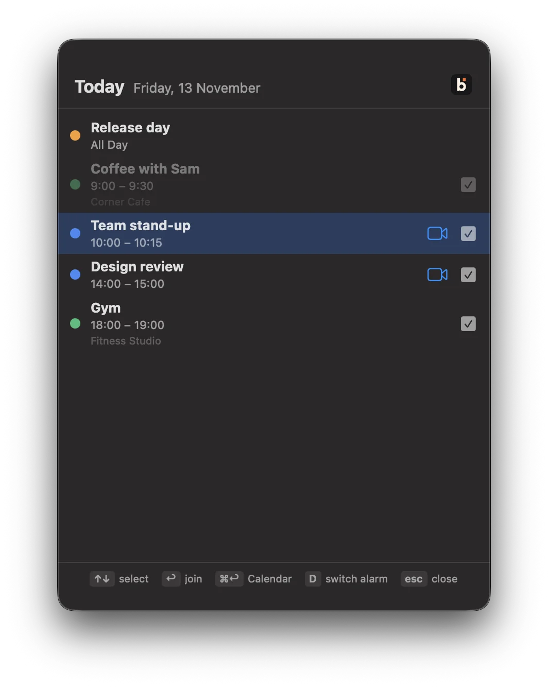
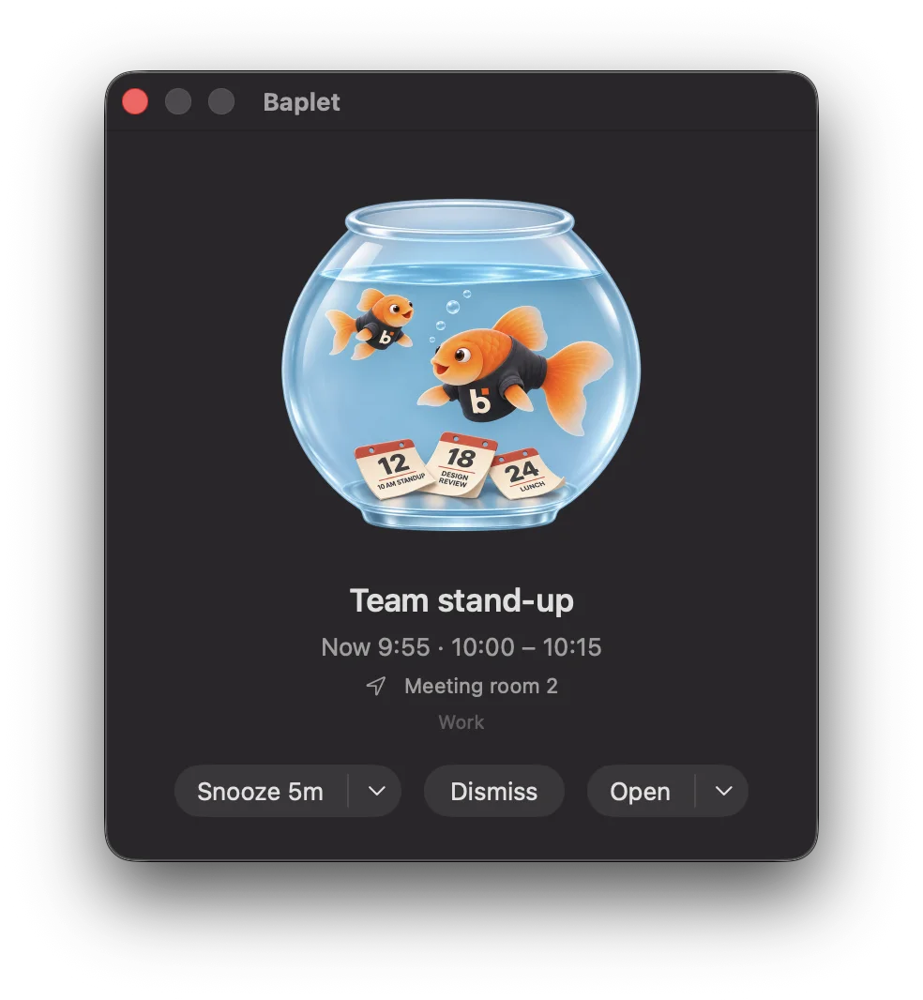
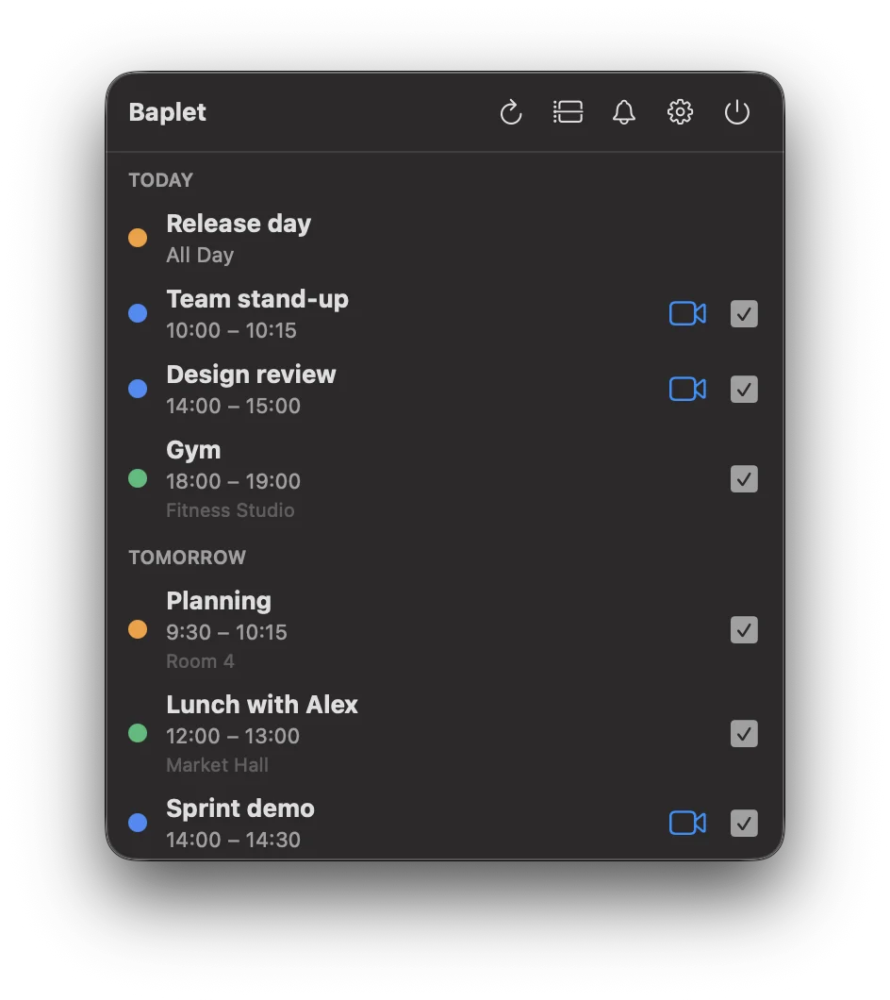

Alerts you can't miss
A popup or a full-screen alert a few minutes before each meeting, in one of four styles. Snooze, dismiss or join with a single key.

For people who keep getting distracted.
Baplet lives in your Mac's menu bar and taps you on the shoulder before every meeting, so you never miss one again.
Heads-up: Baplet isn't signed by Apple yet, so macOS warns you the first time you open it. It takes one extra step — see how to install.
A popup or a full-screen alert a few minutes before each meeting, in one of four styles. Snooze, dismiss or join with a single key.
Press your own global shortcut from any app to see the whole day. Pick a meeting with the arrow keys and press Return to join.

Google Meet, Zoom, Teams, Webex and more open in the browser — and Chrome, Edge, Brave, Vivaldi or Firefox profile — you choose.

A small countdown shows when the next meeting starts. Works with every calendar in the macOS Calendar app: iCloud, Google, Exchange and others.


Apple only lets apps open without a warning when they're signed with a paid Apple Developer ID and checked ("notarized") by Apple. Baplet is an early, free project and isn't signed that way yet, so macOS can't confirm who made it and blocks it until you allow it. Nothing is wrong with the download: Baplet is open source, so you can read every line of its code. Signed builds will come later, and then this extra step goes away.
Baplet.dmg and drag Baplet to Applications.Prefer Terminal? xattr -dr com.apple.quarantine /Applications/Baplet.app does the same as steps 2–3.
Updating? Use Check for Updates in Baplet's Settings → About, or click Update available at the bottom of the menu: Baplet downloads, verifies and installs the new version itself, with no Open Anyway step. macOS asks for calendar access again after an update. (Right-click → Open no longer skips the first-launch warning on recent macOS versions.)